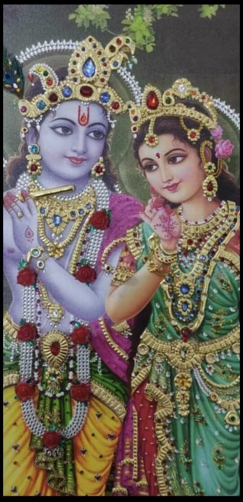
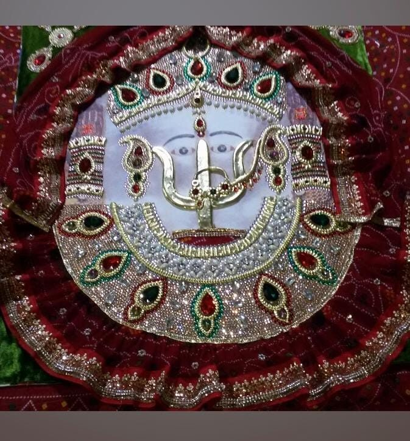
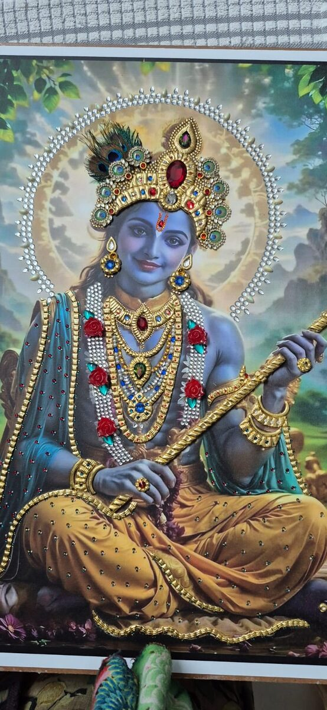
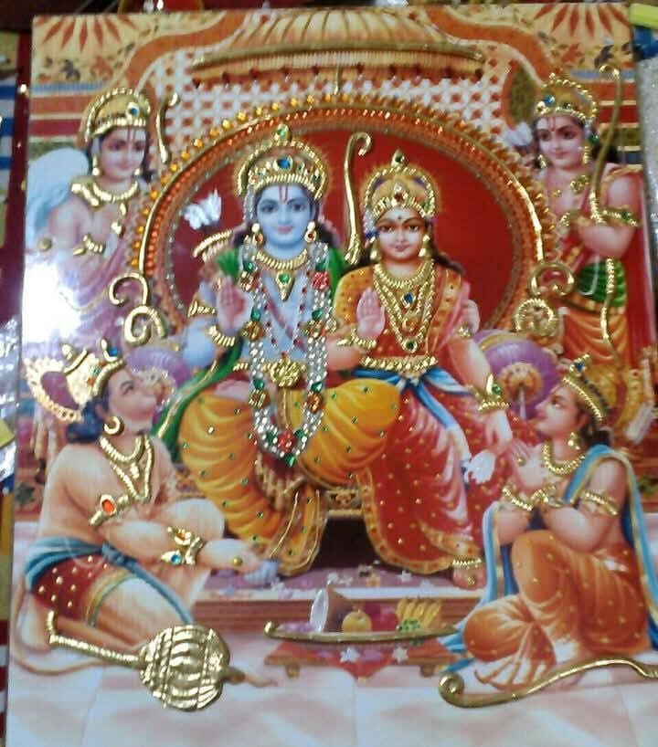
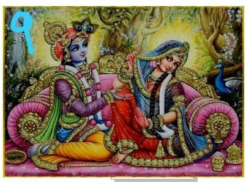
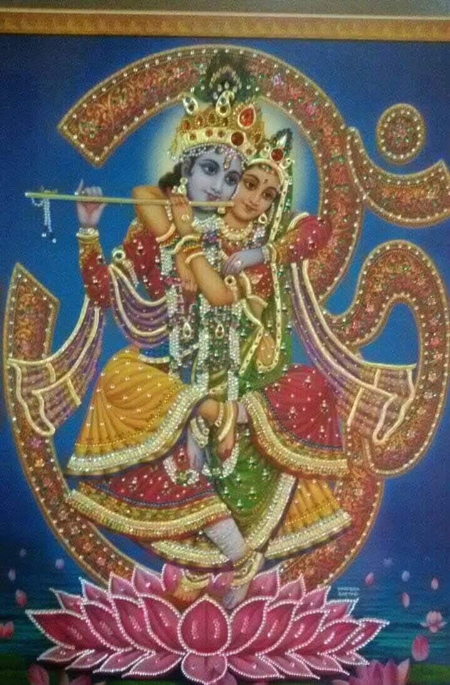
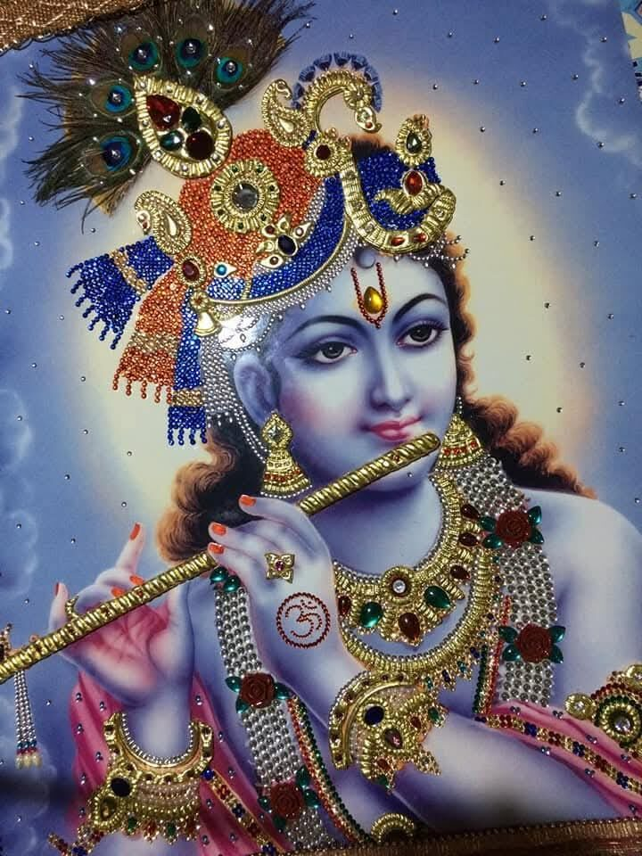
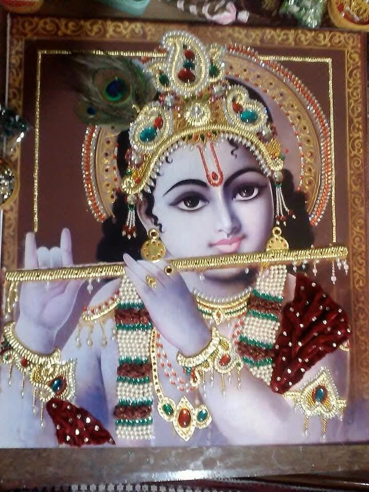
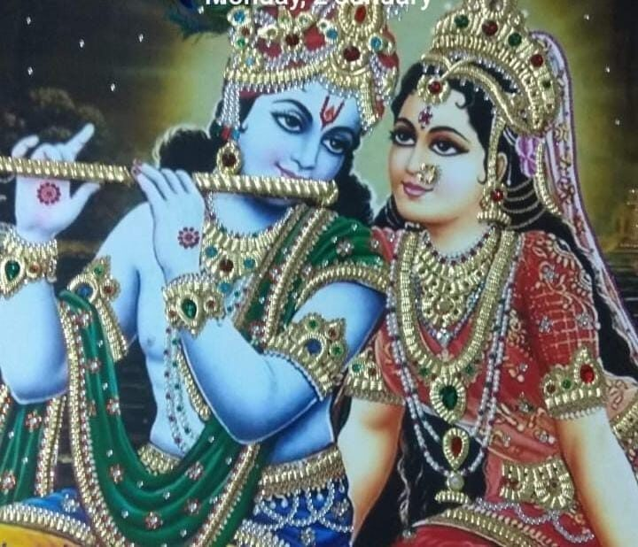

Her work
A few pieces from Jyoti Lath's collection.









Made for your occasion
Weddings
A gift the couple keeps in their home.
25th anniversaries
For a silver jubilee in the family.
Kirtan mementos
कीर्तन-मोमेन्टो, for your gathering.
How to order
- Message on WhatsApp and say which deity and occasion it is for.
- Jyoti ji will share sizes, price and delivery time.
- She starts work once you confirm.
Your number and message are used to answer you and complete your order. Privacy notice
Jyoti Lath, Kolkata
98311 18802
93315 18722